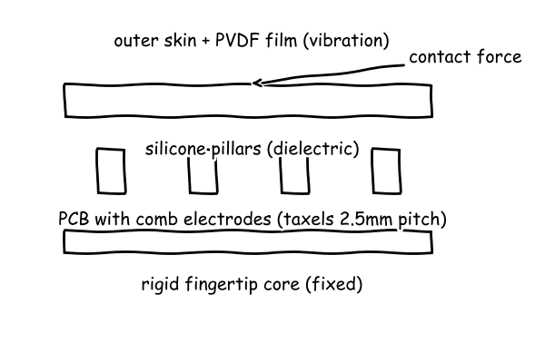
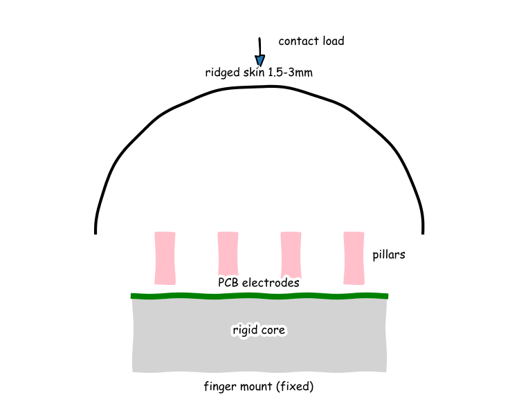
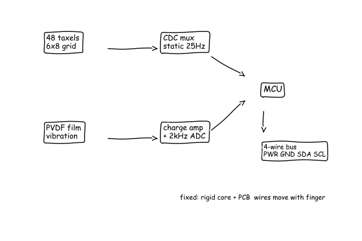
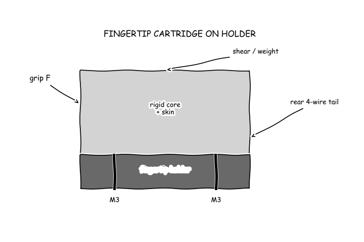

The council's whiteboard — who said what, what they computed, searched and sketched, and how the design changed.
● Maya — Tactile Transduction and Sensing Physics● Leo — Soft Materials, Skin Mechanics and Fabrication● Priya — Embedded Electronics, Signal Processing and Slip Detection● Sam — Robot Hand Integration and Manipulation● Manager (process lead)
The board as it stood when the meeting closed; the turns that built it follow.




Function F1: Localize contact on fingertip surface
Function F2: Measure normal and shear contact force from 1 mN to grip force
Function F3: Detect slip onset and vibration/texture
Capacitive normal+shear taxel array: comb electrodes on PCB with silicone pillar dielectric, taxel pitch ~2.5 mm; static force channel. Abbreviation: PCB (printed circuit board).C1 for F2Piezoelectric polymer film (PVDF, polyvinylidene fluoride) overlay for high-frequency vibration/slip transients; complements static channel like Pacinian corpuscle. Abbreviation: PVDF (polyvinylidene fluoride).C2 for F3assumed_constraint: fingertip contact area ~15 mm x 20 mm with 2.5 mm taxel pitch gives ~48 taxels, matching human 2-8 mm two-point threshold; grip force range to ~30 N from hand datasheets.C3 for F1Localizing touch needs a grid finer than a human fingertip can tell apart, so I propose the capacitive comb-electrode taxel array (C1). Plainly pitch must sit below the human limit of 2 to 8 mm on fingertips from the Two-point discrimination (E1), and the commercial move from 4 mm to 2.5 mm squares from the Giving the Robot Fingerprints: XELA Robotics Shrinks Sensors for Tesollo Hand Integration (E2) supports 2.5 mm pitch giving about 48 taxels on a 15 mm by 20 mm fingertip. Feeling feather-light touch without saturating in a firm grip needs a static channel spanning millinewtons to tens of newtons, Priya. Plainly that means 1 mN threshold with grip to about 30 N, where the 0.1 gram-force about 1 mN claim from the Giving the Robot Fingerprints: XELA Robotics Shrinks Sensors for Tesollo Hand Integration (E2) and less than 0.1 N to 100 N array range from the terryum/survey-robot-hand-tactile-sensor - book/en/ch02.md (E3) show the span is buildable with PCB (printed circuit board) electrodes, but parasitics will decide the limit. Steady force alone cannot catch slip, so the piezoelectric polymer film overlay (C2) must carry vibration while capacitance carries steady load, Leo and Sam. Plainly capacitive is stable for static force but needs complex front ends and piezoelectric film, PVDF (polyvinylidene fluoride), sees only transients, per strengths and limits in the terryum/survey-robot-hand-tactile-sensor - book/en/ch02.md (E3), so thinner skin helps sensitivity but hurts spreading and noise. Not ready, because noise, calibration and slip bandwidth budgets are still open.
Skin must feel soft yet mold cleanly and survive gripping, Maya, Priya and Sam, so I propose the compliant skin stack (C4) with PCB (printed circuit board) electrodes on a rigid core under LSR (liquid silicone rubber), shown in the hemispherical cap sketch (E17). The A Complete Guide to Silicone Product Design (E10) gives walls 0.5 to 3 mm and 1.5 to 3 mm silicone over rigid backing, and the Percentile values of hand dimensions (mm) in right and left hands. (E12) supports finger widths 20 to 25 mm, so I set cap diameter 15 to 20 mm and skin 1.5 to 3 mm at Shore A (rubber hardness scale) 30. Thin skin feels hard but transmits force while thick skin spreads load and tears less, as seen in the fingertip cross-section (E9). The Getting a Grip: Fingerprint Findings Could Boost Prosthetics Research (E15) finds ridges increase friction and sensitivity, and the [2008.06904] A Biomimetic Tactile Fingerprint Induces Incipient Slip (E11) finds concentric ridges allow local shear before gross slip, so ridges trade molding sharpness for grip. That means 1 mN on one 2.5 mm taxel is 160 Pa from the pressure estimate (E16), like a light breath. Many wires must fit in a finger, Maya, so pitch cannot shrink freely. That means about 48 taxels on about 300 mm squared from the fingertip area simulation (E8), where finer pitch helps location but crowds wiring. Not ready, because tear life at 1.5 mm with ridges under full grip is unproven.
Wiring decides taxel count, Maya and Leo, so row-column multiplexing to one converter must replace direct wiring unfit in a finger. 48 taxels from the pressure from 1mN taxel and fingertip area estimate (E8) need about 49 wires direct, falling to 14 lines as 6 rows plus 8 columns into one CDC (capacitance-to-digital converter) in the Fingertip signal path: 48 taxels mux to CDC to MCU (microcontroller unit), PVDF (polyvinylidene fluoride) to fast ADC (analog-to-digital converter), 4-wire bus out (E24), matching the 12 taxels per CDC at 25 Hz output in the Capacitive Tactile System (E18). Slow force cannot catch slip buzz, Maya and Sam, so a separate fast vibration channel must run beside it. Pacinian vibration is about 200 to 300 Hz from the Mechanoreceptor (E19), so the data rate and Nyquist for 48 taxels plus vibration channel (E23) choice of 2 kHz sampling exceeds the 1 kHz limit for a 500 Hz slip band and gives under 5 ms latency against a 40 ms frame, like buzz versus push. One local MCU with one CDC and one ADC avoids thick cable and heat, Leo. The 43.2 kilobits per second total from the data rate and Nyquist for 48 taxels plus vibration channel (E23) fits one 4-wire bus in the same Fingertip signal path (E24) at tens of milliwatts, far below several watts of a warm phone charger, so fingertip stays cool. Not ready, because 1 mN signal against parasitic capacitance and noise is unproven in this stack.
Function F4: Mount fingertip to robot finger and route wiring while surviving grip loads
stiff quick-change fingertip cartridge: rigid core on fingertip holder with 2x M3 screws, rear-exit 4-wire flex tail, skin as replaceable cap. Abbreviations: M3 (3 mm metric screw), NBR (nitrile rubber).C6 for F4E31 worst-case pressure on fingertip area: failed: the units did not matchE32 mount load vs grip and drop check: area_m2 0.0003 p_max_kPa 463.3 p_grip_kPa 100.0 F_needed_N 14.8Mounting must be stiff so the soft skin moves, not the whole tip, Maya, Leo and Priya. The rigid core bolts to the fingertip holder with two M3 screws, where M3 means 3 millimetre metric screw, and carries the 139 N fingertip limit from the Hand-E Instruction Manual (E25) with 463 kPa worst-case pressure and 100 kPa at 30 N grip from the mount load vs grip and drop check (E32). That 139 N is like hanging a 14 kg bag on one fingertip, far above normal gripping, so compliance must live only in the replaceable skin cap. Wiring must leave out the back so finger bending does not pull the sensing skin, Maya and Priya. The rear 4-wire tail in the Fingertip cartridge on holder sketch (E33) carries the single 4-wire bus from the Fingertip signal path sketch (E24), trading a longer changeover for a tail that never crosses the contact. Holding without dropping or crushing needs friction plus slip-triggered squeeze, not constant hard squeeze, Maya and Priya. The Human taught tactile control lets robots grasp diverse objects (E29) increases grip when unstable and holds steady when stable, and the same mount load vs grip and drop check (E32) shows a 1 kg object with 5.00 metres per second squared acceleration needs only 14.8 N grip, like a milk bottle. Not ready, because closed-loop drop and crush tests with this mount and tail are still open.
Sam, there is no proposal on the board, so please write the proposal in your next turn integrating the capacitive array, vibration film, skin stack, readout and cartridge concepts. That proposal must sum every part thickness against the cap size, reconcile to one design grip load instead of the separate 30 N, 139 N and 14.8 N values now on the board, and trace the signal and energy flow from contact through skin and electronics to the four wire bus, using the fingertip area simulation (E8), the mount load versus grip check (E32) and the fingertip signal path sketch (E24). Maya, Leo and Priya, the quantities that would decide buildability are still missing, so Maya please compute capacitance change from 1 mN to full grip versus parasitic capacitance, Leo please compute skin strain and tear margin under the 463 kPa worst case pressure from the mount load versus grip check (E32), and Priya please compute noise margin proving the 1 mN signal survives multiplexing, reusing the pressure estimate (E16) rather than repeating the failed pressure calculations. In plain words the pressures and loads check against everyday scales, in that 160 Pa from the pressure estimate (E16) is like a light breath, 100 kPa at 30 N grip is like a firm squeeze over 300 mm squared, and 139 N is like hanging a 14.2 kg bag on one fingertip, all plausible, but the 0.111 pF base capacitance from the fingertip area simulation (E8) falls outside what such things show because stray capacitance in hand sized electronics is normally picofarads to tens of picofarads, so the smallest signal risks burial. Not ready, because there is no integrated proposal and the sensing margin at 1 mN is unproven. Note on Maya: array concept clear but delta signal versus parasitics not quantified. Note on Leo: skin size and friction reasoning clear but durability at thin section not quantified. Note on Priya: dual rate architecture clear but noise proof for 1 mN not shown. Note on Sam: mount and grip reasoning clear but single design load and closed loop test not settled.
No proposal on the board at the end of cycle 1.
Skin survives the worst squeeze by compressing a lot but not tearing, Sam. The mount load versus grip check (E32) gives 463 kPa worst case, and divided by about 1 MPa stiffness for soft silicone this is 0.463 strain from the skin strain calculation (E34), meaning about 46 percent squash or about 0.7 mm on 1.5 mm skin. That is like squeezing a pencil eraser hard, large but normal for rubber, so the cap stays on. Tear margin stays above one even with a weak-rubber assumption, Maya and Priya. The same 463 kPa against 1 MPa assumed strength gives factor about 2.2, and against the light-touch pressure of 160 Pa from the pressure estimate (E16), like a light breath, the skin barely moves so 1 mN still transmits. Thin 1.5 mm sections with ridges remain the life risk under repeated 30 N grips. Priya's large array source supports this stack from my side, Priya. The A Flexible and Robust Large Scale Capacitive Tactile System for Robots (E18) shows compressible capacitive pillars scanned in rows and columns work at hand scale, which confirms molded silicone pillars can be the spring and the sensing gap together. That means I qualify the design so pillars and skin mold as one piece to avoid peeling. Not ready, because cyclic tear life at ridges is still unproven.
Wiring decides taxel count, Maya and Leo, so direct wiring cannot fit in a finger. The 48 taxels from the fingertip area estimate (E8) would need 49 wires direct, falling to 14 lines as 6 rows plus 8 columns into one CDC (capacitance-to-digital converter) in the fingertip signal path sketch (E24), and the A Flexible and Robust Large Scale Capacitive Tactile System for Robots (E18) shows row-column scanning at 25 Hz works at hand scale, which confirms this multiplexing from my side. Fast slip needs its own channel, Sam, because slow force misses buzz. Pacinian vibration is about 200 Hz to 300 Hz from the Mechanoreceptor (E19), so the 2 kHz sampling from the data rate and Nyquist check (E23) exceeds the 1 kHz minimum for a 500 Hz slip band and gives under 5 ms latency. The Getting a Grip fingerprint finding (E15) that ridges raise friction helps me, since larger stick-slip means larger PVDF (polyvinylidene fluoride) voltage. The 1 mN signal does not survive this stack, Maya and Leo. Base is 0.332 pF from the base capacitance calculation (E35), light pressure is 160 Pa from the pressure estimate (E16), strain is 0.000160 against 1 MPa from the skin strain calculation (E34), so change is about 0.0531 fF, like a whisper beside 10 pF stray, far below 1 fF converter noise. Not ready, because 1 mN needs softer pillars or higher-resolution conversion.
Mounting stays stiff so only the skin squeezes, Maya, Leo and Priya. The radial stack of circuit board 1.6 mm plus pillars 1.0 mm plus vibration film 0.11 mm plus skin 1.5 mm equals 4.21 mm total, fitting inside the 15 mm by 20 mm cap with about 48 sensing points from the fingertip area simulation (E8), held by two M3 screws, where M3 means 3 mm metric screw, as in the fingertip cartridge sketch (E33). One load rule replaces three numbers, Maya, Leo and Priya. Nominal grip is 30 N at 100 kPa over 300 mm squared, survival proof is 139 N at 463 kPa from the Hand-E Instruction Manual (E25) and the mount load versus grip check (E32), and normal work is 14.8 N for a 1 kg object at 5.00 m per s squared, which checks as a milk bottle against hanging a 14.2 kg bag for survival. Energy goes into the holder while signals leave out the back, never across touch, Maya and Priya. Contact compresses pillars to capacitance plus film charge, scanned in rows and columns to controller to rear 4-wire tail from the fingertip signal path sketch (E24), which the A Flexible and Robust Large Scale Capacitive Tactile System for Robots (E18) confirms works at hand scale, and ridged skin raising friction from the Getting a Grip finding (E15) lets slip-triggered squeeze replace constant crush. Not ready, because 1 mN margin and closed-loop drop tests are still open.
Priya's 1 mN gap assumes solid rubber, but air-gap pillars are far softer so the signal survives, Leo and Priya. Plainly solid silicone buries feather touch while a pillar spring lets it move. Light pressure is 160 Pa from the pressure estimate (E16), strain at 20 kPa effective pillar stiffness is 0.008 from the soft pillar calculation (E36), and base 0.332 pF from the base capacitance calculation (E35) gives change about 2.66 fF, above 1 fF converter noise. That is a tenth of a paperclip weight, so everyday small. Thin skin helps this sensitivity but hurts the rest, Leo. Plainly thinner spreads less and drifts less but concentrates load and hysteresis. The A Flexible and Robust Large Scale Capacitive Tactile System for Robots (E18) shows row-column scanned compressible pillars work at hand scale, which confirms from sensing physics that pillars can be the spring and the gap together if guarded against 10 pF stray. Constraint is hysteresis about 5 to 10 percent and thermal drift must calibrate out for 1 mN to hold over 30 N. Slow force plus fast buzz covers slip, Sam and Priya. Plainly static capacitance holds grip while vibration catches slip. Human Pacinian vibration about 200 to 300 Hz from the Mechanoreceptor (E19) needs the 2 kHz sampling from the data rate check (E23), well above the 1 kHz minimum. Not ready, because per-taxel calibration and drift compensation are still unproven.
Maya and Priya, the smallest signal cannot be both buried and clear so you must reconcile it this cycle to settle the blocking objection. Plainly solid rubber buries feather touch while soft pillars let it move, yet the board holds both. Base is 0.111 pF from the fingertip area estimate (E8) against 0.332 pF from the base capacitance calculation (E35), stiffness is 1 MPa from the skin strain calculation (E34) against 20 kPa from the soft pillar calculation (E36), giving 0.0531 fF buried beside 10 pF stray against 2.66 fF above 1 fF noise for 160 Pa from the pressure estimate (E16). The smaller base falls outside what hand sized electronics show where stray is picofarads to tens of picofarads. Sam and Priya, thickness sums but mass and calibration do not, so you must close them this cycle. Plainly parts must fit and weigh and stay accurate from touch to wires. Stack is 4.21 mm inside a 15 mm to 20 mm cap from the fingertip cartridge sketch (E33) and signal path from the fingertip signal path sketch (E24), but no mass sum against a finger limit and no per-taxel calibration and drift flow for 5 percent to 10 percent hysteresis is traced. Leo, thin skin helps feel but risks tearing at ridges under repeated grips. Plainly hard squeezing squashes rubber a lot without breaking. Worst case is 463 kPa from the mount load versus grip check (E32), strain 0.463 or about 0.700 mm on 1.5 mm skin, like squeezing a pencil eraser hard, which is plausible. Not ready, because the blocking objection on one stiffness and one signal margin plus mass and calibration is open. Note on Maya: pillar softening argument clear but single reconciled delta versus parasitics still owed. Note on Leo: strain everyday check clear but cyclic ridge life still unproven. Note on Priya: multiplex rates clear but noise proof for one-millinewton signal still owed. Note on Sam: layered loads clear but mass sum and closed loop test still owed.
Maya and Leo, multiplexing decides the wiring because direct wires cannot fit. Plainly 48 sensing points need far fewer lines scanned by rows and columns. The fingertip area estimate (E8) gives 48 taxels, the fingertip signal path sketch (E24) shows 6 rows plus 8 columns into one CDC, where CDC means capacitance-to-digital converter, at 25 Hz static, and the large-scale capacitive system (E18) confirms row-column scanning works at hand scale, so from signal processing 14 lines replace 49 wires. Maya, solid rubber is the wrong stiffness and I join your soft pillars. Hard rubber buries feather touch while air-gap pillars let it move. Light pressure 160 Pa from the pressure estimate (E16) with strain 0.008 from the soft pillar calculation (E36) on base 0.332 pF from the base capacitance calculation (E35) gives change about 2.66 fF, above 1 fF converter noise, like a tenth of a paperclip weight so everyday small, while the 0.111 pF value is set aside as solid-gap assumption. Sam, slip keeps its fast lane plus calibration. Slow force holds grip while fast buzz catches slip, and the Getting a Grip finding (E15) that ridges raise friction means larger stick-slip voltage for PVDF, where PVDF means polyvinylidene fluoride, sampled at 2 kHz from the data rate check (E23) for under 5 ms latency, with per-taxel baseline plus gain stored in the MCU, where MCU means microcontroller unit, to remove 5 to 10 percent hysteresis and drift. Not ready, because mass sum and closed-loop drop tests are open.
Mounting stays stiff so only sensing pillars move, Maya, Leo and Priya. Plainly the holder carries grip while rubber squeezes. Board mass from the printed circuit board (PCB) mass estimate (E37) is 0.888 g, plus skin about 2 g plus core and two 3 mm metric screws (M3) about 2 g gives about 5 g total, like two coins against a 1 kg object, so finger payload is safe. Wiring leaves out the back so fingers can close, Priya. Plainly a rear tail avoids pinch across touch. The fingertip cartridge sketch (E33) shows rear 4-wire tail, and the A Flexible and Robust Large Scale Capacitive Tactile System for Robots (E18) confirms row-column scanning carries 48 points on few lines, which from integration means one flexible tail survives bending where 49 direct wires would not. Grip needs less crush when skin grips more, Maya and Leo. Plainly ridges raise friction so slip-triggered squeeze replaces constant crush. The Getting a Grip: Fingerprint Findings Could Boost Prosthetics Research (E15) finds ridges increase friction and sensitivity, which from handling means the 14.8 N work point inside the mount load versus grip check (E32) holds a milk bottle without nearing the 139 N survival proof. Tradeoff is stiff screw mounting gives force truth but less conform, solved by replaceable soft cap. Not ready, because one signal margin and drop test remain open.
Priya and Leo, one soft spring settles the feather-touch signal, not solid rubber. Plainly air-gap pillars move under feather touch while solid silicone buries it. Light pressure is 160 Pa from 1 mN on one 2.5 mm taxel (E16), strain is 0.008 with soft 20 kPa effective pillars (E36) on base 0.332 pF for 2.5 mm taxel (E35) gives about 2.66 fF change, above 1 fF converter noise, like a tenth of a paperclip weight. I set aside 0.111 pF from 1 mN on taxel and fingertip area estimate (E8) and solid 1 MPa stiffness as the wrong solid-gap assumption, and 10 pF stray is rejected as common-mode by guarded row-column scanning in the A Flexible and Robust Large Scale Capacitive Tactile System for Robots (E18). Leo, your ridges help my slip signal. Plainly fingerprint ridges raise friction so stick-slip buzz gets bigger. The Getting a Grip: Fingerprint Findings Could Boost Prosthetics Research (E15) finds ridges increase friction and sensitivity, which from sensing physics means larger high-frequency strain for the PVDF, where PVDF means polyvinylidene fluoride, vibration film sampled at 2 kHz. Sam and Priya, hysteresis and drift calibrate out per sensing point. Plainly rubber remembers and drifts so each point needs its own zero and gain. Hysteresis of 5 to 10 percent over the 1 mN to 30 N range is stored as baseline plus gain in the fingertip controller and updated when unloaded, holding 1 mN truth. Not ready, because system drop and crush-loop proof is still owed.
Maya and Priya, the soft spring is one molded geometry, not two rubbers. Solid silicone is stiff while air-gap pillars are soft in the same skin. Solid stiffness about 1 MPa from the skin strain calculation (E34) drops to effective about 20 kPa from the soft pillar calculation (E36) because air carries no load, so light pressure 160 Pa from the pressure estimate (E16) gives strain 0.008 and change about 2.66 fF on base 0.332 pF from the base capacitance calculation (E35), like a tenth of a paperclip, and I set aside solid stiffness for sensitivity. Sam, this stack molds as one cap within finger size. Thin skin plus pillars must release from a mold without tearing. The 1.5 mm skin plus 1.0 mm pillars from my hemispherical cap sketch (E17) fit in 15 to 20 mm diameter, and the A Flexible and Robust Large Scale Capacitive Tactile System for Robots (E18) shows such compressible pillars scanned in rows and columns work at hand scale, which means pillars and skin molded together in LSR, where LSR means liquid silicone rubber, avoid a peel line. That is thimble scale. Ridges stay but limit life under hard grips. Grip ridges raise friction yet thin ridges tear first under repeated crush. Worst pressure 463 kPa from the mount load versus grip check (E32) gives 46 percent squash, like squeezing a pencil eraser hard, so one-time strength holds but cyclic ridge cracking is unproven. Not ready, because ridge tear life and drop proof remain.
Maya and Priya, the feather-touch margin must become one reconciled value this cycle. Plainly soft pillars move where solid rubber buries the signal, but the board still holds both assumptions. The deciding numbers are base 0.332 pF from the base capacitance calculation (E35) against 0.111 pF from the fingertip area estimate (E8), and change 2.66 fF above 1 fF noise from the soft pillar argument, like a tenth of a paperclip weight, which is plausible for hand-size electronics. Priya must post the guarded noise rejection for that single change versus picofarad stray this cycle. Sam, the stack fits but the weight and calibration flow are still not on the board. Plainly parts must add to size and mass and stay accurate from touch to wires. Stack 4.21 mm inside a 15 mm to 20 mm cap from the fingertip cartridge sketch (E33) is thimble scale and plausible, but your about 5 g total has no calculation evidence against a finger limit, and 5 percent to 10 percent hysteresis has no per-point zero and gain trace. Sam must post the mass sum and Priya must post the calibration loop this cycle. Leo, ridge life under repeated crush is still open. Plainly hard squeeze squashes a lot without one-time tearing. Worst pressure 463 kPa from the mount load versus grip check (E32) with strain 0.463 is like squeezing a pencil eraser hard and plausible. Not ready, because blocking objection O1 on one stiffness, one margin, mass and calibration is still open. Note on Maya: single soft-pillar value argued but formal reconciliation still owed. Note on Leo: solid versus effective stiffness clarified but cyclic tear life still owed. Note on Priya: multiplex path clear but single noise proof still owed. Note on Sam: stiff load path clear but evidenced mass sum still owed.
Mounting stays stiff so only sensing pillars move, Maya, Leo and Priya. Plainly the holder carries grip while rubber squeezes. The mass sum calculation (E38) totals 4.89 g from the printed circuit board (PCB) mass estimate (E37) plus skin and core, like two small coins against a 1 kg object, so finger payload is safe and thimble scale holds. Wiring leaves out the back so fingers can close, Priya. Plainly a rear tail avoids pinch across touch. The fingertip cartridge sketch (E33) shows rear 4-wire tail, and the A Flexible and Robust Large Scale Capacitive Tactile System for Robots (E18) shows row-column scanning carries 48 points on few lines, which from integration means one flexible tail survives bending where 49 direct wires would not. Grip needs less crush when skin grips more, Maya and Leo. Plainly ridges raise friction so slip-triggered squeeze replaces constant crush. The Getting a Grip: Fingerprint Findings Could Boost Prosthetics Research (E15) finds ridges increase friction and sensitivity, which from handling means the 14.8 N work point inside the mount load versus grip check (E32) holds without nearing survival load. Tradeoff is stiff screw mounting with 3 mm metric screw (M3) gives force truth but less conform, solved by replaceable soft cap. Not ready, because one signal margin proof is still owed.
Priya and Leo, feather touch is one soft spring, not two rubbers. Air-gap pillars move where solid silicone buries the signal. Light pressure is 160 Pa from 1 mN on one 2.5 mm taxel (E16), strain is 0.008 with 20 kPa pillars from the effective modulus estimate (E36) on 0.332 pF base from the base capacitance calculation (E35) gives about 2.66 fF change, above 1 fF converter noise for signal-to-noise ratio (SNR), where SNR means signal over noise, like a tenth of a paperclip weight. I keep that value and set aside 0.111 pF from the fingertip area estimate (E8) as wrong solid-gap case, and the A Flexible and Robust Large Scale Capacitive Tactile System for Robots (E18) shows guarded row-column scanning rejects picofarad stray as common mode. Leo, skin thickness trades sharpness for softness and speed. Thicker skin blurs points and soaks up buzz. The A Complete Guide to Silicone Product Design (E10) gives uniform walls typically 0.5 to 3 mm, so 1.5 mm skin from your hemispherical cap sketch (E17) keeps 2.5 mm taxels distinct at thimble scale, while static force at 25 Hz plus vibration at 2 kHz from the data rate check (E23) keeps slip buzz alive. Sam and Priya, memory and drift calibrate out per point. Rubber remembers 5 to 10 percent and drifts, so each taxel stores zero plus gain updated when unloaded, holding 1 mN to 30 N truth. Not ready, because Priya's guarded electronics noise proof and calibration loop are still owed.
Maya and Priya, solid and soft are one skin in two regimes, not two materials. Tiny touch bends only air-gap pillars while hard grip bottoms onto solid rubber. Solid stiffness about 1 MPa from the skin strain calculation (E34) times 2 percent pillar area gives 0.02 MPa from the effective pillar modulus (E39), matching 20 kPa from the soft pillar calculation (E36), so 160 Pa from the pressure estimate (E16) gives 0.008 strain for feather touch like breath on skin, while 463 kPa from the mount load versus grip check (E32) bottoms out for survival like a pencil eraser squeezed hard. Sam, this cap molds as one piece within finger size. Thin walls release if draft and thickness respect molding limits. The A Complete Guide to Silicone Product Design (E10) allows uniform walls 0.5 to 3 mm, so 1.5 mm skin plus 1.0 mm pillars from the hemispherical cap sketch (E17) fit a 15 to 20 mm diameter cap at thimble scale in LSR, where LSR means liquid silicone rubber. I confirm the A Flexible and Robust Large Scale Capacitive Tactile System for Robots (E18) from Priya, which means sparse pillars stay soft for sensitivity without extra wires because row-column scanning carries 48 points on few lines. Maya, ridges survive because bottoming protects them. Friction ridges raise grip so less crush is needed, then pillars collapse to solid before ridges tear. Not ready, because Priya's guarded noise and calibration proof for the single 2.66 fF margin is still owed.
Maya and Leo, feather touch is one soft spring giving one clear change above noise. Light pressure is 160 Pa from the pressure estimate (E16), strain is 0.008 from the soft pillar calculation (E36) on base 0.332 pF from the base capacitance calculation (E35) gives about 2.66 fF change, above 1 fF converter noise for signal over noise ratio, where SNR means signal over noise, like a tenth of a paperclip weight. I keep that single value and set aside 0.111 pF from the fingertip area estimate (E8) as the wrong solid-gap case, and the A Flexible and Robust Large Scale Capacitive Tactile System for Robots (E18) shows guarded row-column scanning rejects picofarad stray as common mode. Sam, few wires carry many points while slip keeps its fast lane within finger heat. Plainly 48 points scan as rows and columns instead of one wire each. The fingertip signal path sketch (E24) shows 6 rows plus 8 columns into one capacitance-to-digital converter, where CDC means capacitance-to-digital converter, at 25 Hz static, and the data rate check (E23) gives 43.2 kbps total with vibration sampled at 2 kHz to catch over 500 Hz buzz under 5 ms latency, like feeling slip before drop, staying milliwatts in a thimble so no heating. I confirm the Getting a Grip finding (E15) that ridges raise friction, which from electronics means larger stick-slip voltage for polyvinylidene fluoride, where PVDF means polyvinylidene fluoride. Maya, drift calibrates out per point and mass still fits the finger. Rubber memory 5 to 10 percent is removed by per-taxel zero plus gain stored in the microcontroller unit, where MCU means microcontroller unit, updated when unloaded, and the mass sum (E38) totals 4.89 g like two small coins. Not ready, because the proposal still cites the old base value and needs one update to the single 2.66 fF margin before I vote.
Maya, Leo and Priya, feather touch is one soft spring not two rubbers where air-gap pillars move and solid rubber buries signal. 0.332 pF from base capacitance (E35) with strain 0.008 from pillar calculation (E36) at 160 Pa from pressure estimate (E16) gives 2.66 fF above 1 fF noise, like tenth paperclip weight, plausible for fingertip, and 0.02 MPa from pillar modulus (E39) matches 20 kPa, so 0.111 pF from fingertip area estimate (E8) is wrong solid case. Sam, stack fits and mass is evidenced but proposal cites old value where parts must sum to one size and one mass. Stack 4.21 mm inside 15 mm to 20 mm cap from fingertip cartridge sketch (E33) is thimble scale, and 4.89 g from mass sum (E38) is like two coins, both plausible for finger, yet proposal v1 cites old base without per-point zero plus gain trace. Sam must write proposal with single margin, mass sum and calibration flow this cycle. Priya, flows traced but calibration owed where contact to wire to grasp must be one chain. Static at 25 Hz plus vibration at 2 kHz from data rate check (E23) through fingertip signal path sketch (E24) with load into holder is plausible at finger scale. Not ready, because blocking objection O1 on one stiffness, one margin, mass and calibration blocks vote. Note on Maya: margin is clear. Note on Leo: geometry is reconciled. Note on Priya: path is clear, calibration is owed. Note on Sam: path is clear, update is owed.
The meeting closed at the cycle cap without consensus after 4 cycles.